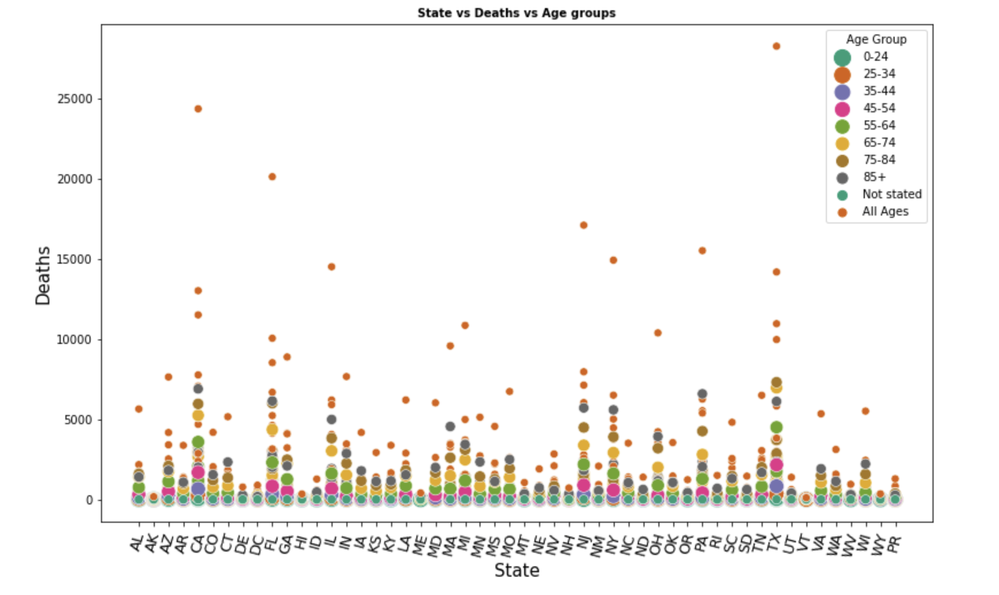
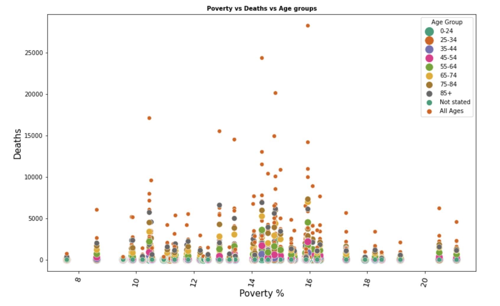
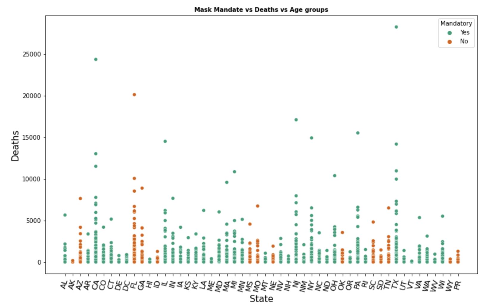
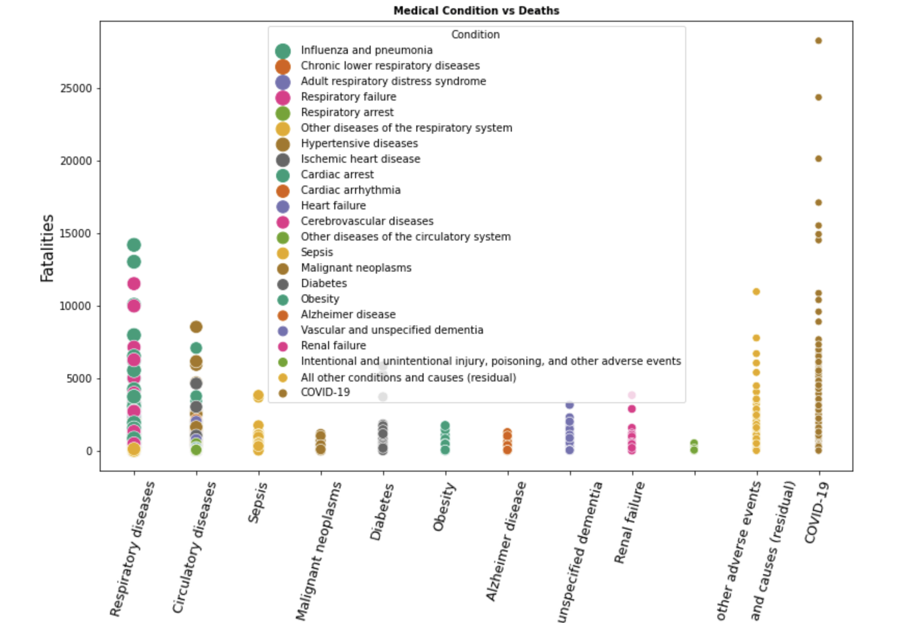
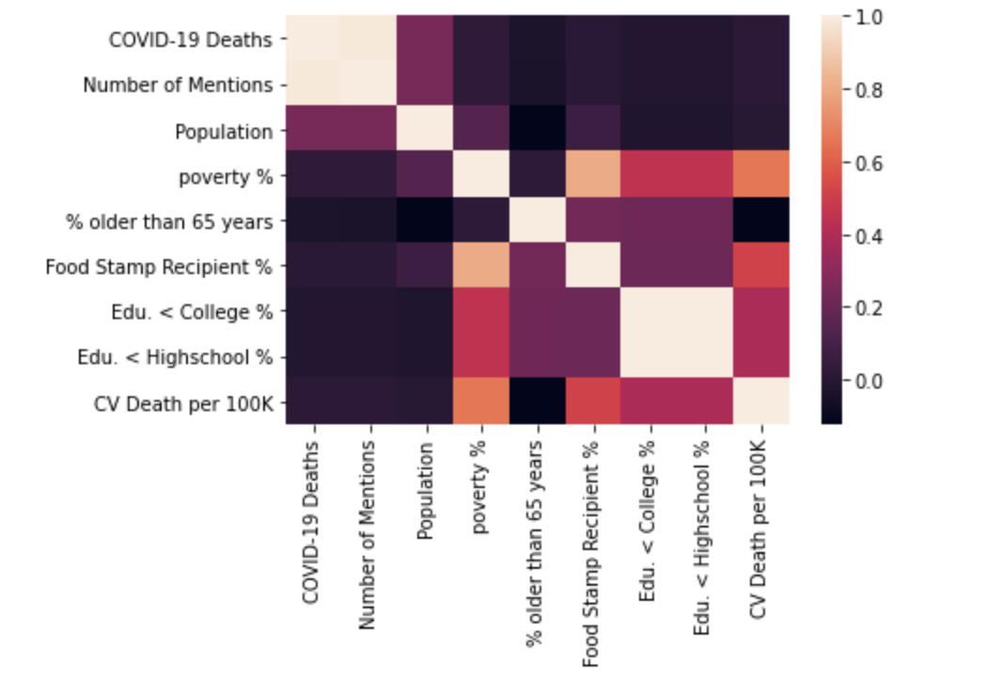

Analyzing the Conditions Contributing to Covid-19 Deaths
Summary:
• Combined a CDC Covid-19 dataset and a public health dataset to study the effects of statewide features such poverty and literacy rates (among other features), medical conditions, age groups and mask mandate on Covid-19 fatalities.
• Used python and Weka to explore patterns and see how each of the features lined up in contributing to Covid-19 fatalities.
• Performed feature selection and used the features to forecast Covid -19 fatalities with an r2 score of 0.78 and mean absolute error of 0.3. Algorithms used: Linear regression, Support vector regressor, Random Forest and decision tree regressor.
Some Exploratory Data Analysis:
    